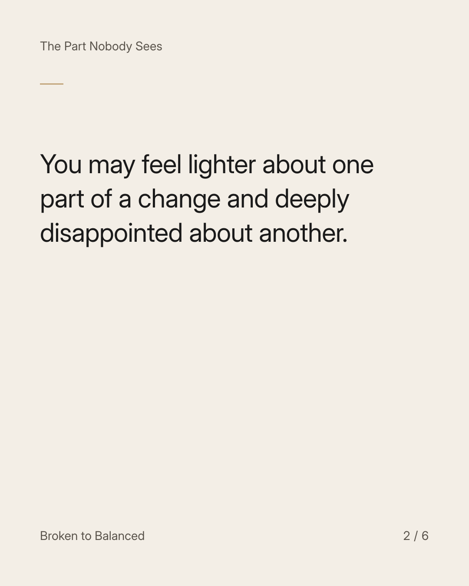
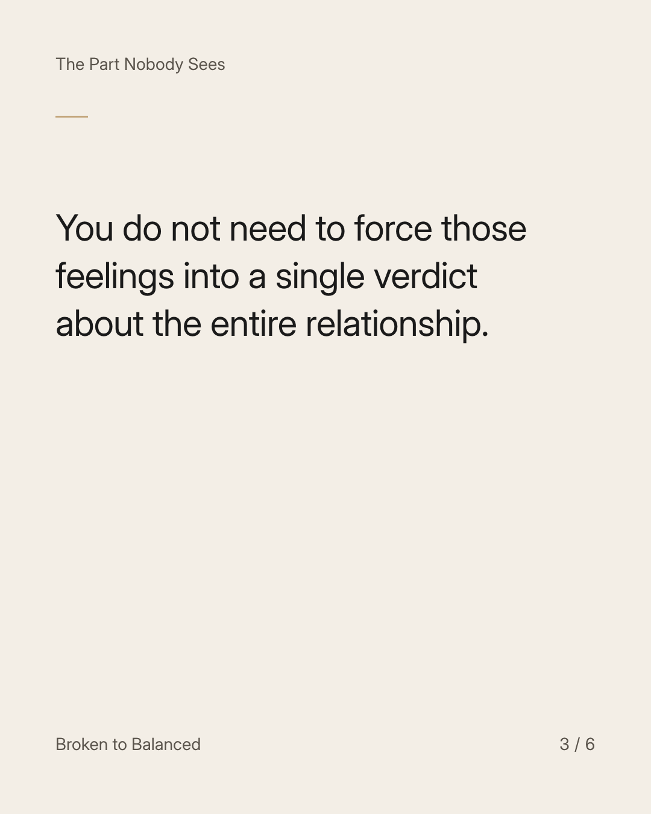
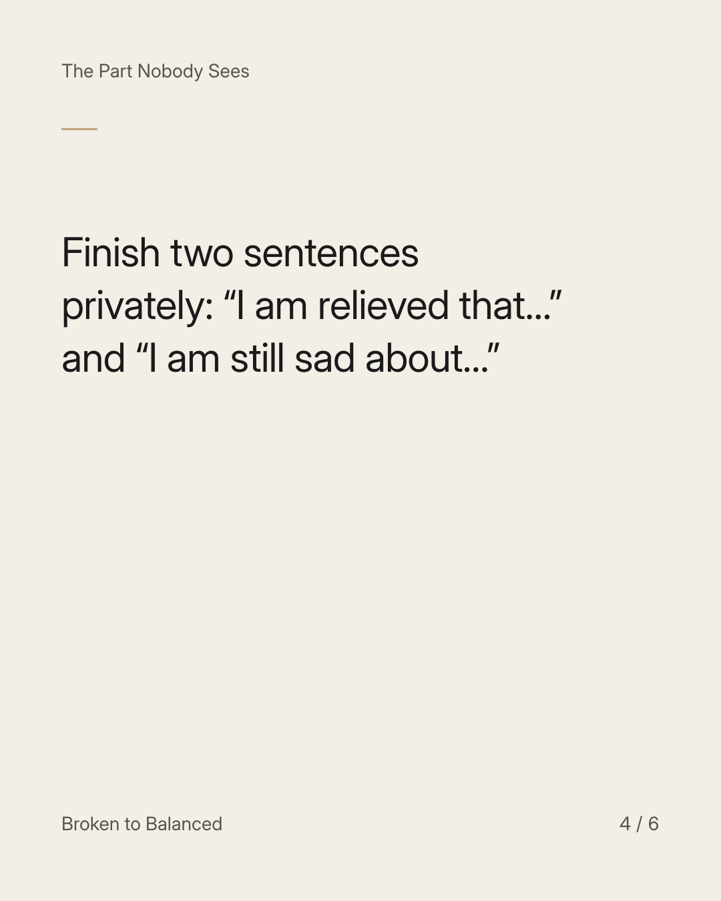
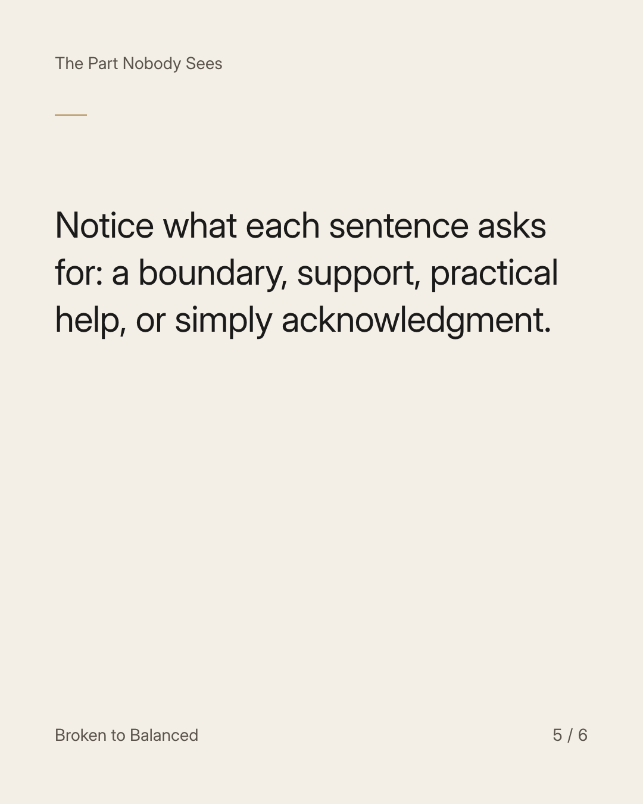
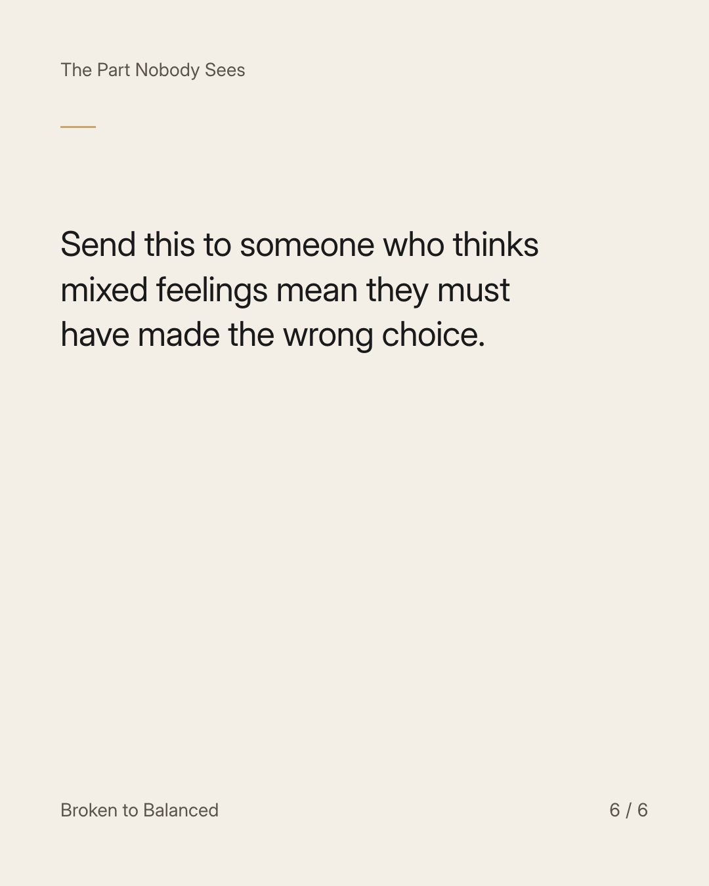

Exact text and accessibility text
Relief and sadness can belong to the same decision.
Slide 1 of 6. Relief and sadness can belong to the same decision.


Exact text and accessibility text
You may feel lighter about one part of a change and deeply disappointed about another.
Slide 2 of 6. You may feel lighter about one part of a change and deeply disappointed about another.


Exact text and accessibility text
You do not need to force those feelings into a single verdict about the entire relationship.
Slide 3 of 6. You do not need to force those feelings into a single verdict about the entire relationship.


Exact text and accessibility text
Finish two sentences privately: “I am relieved that…” and “I am still sad about…”
Slide 4 of 6. Finish two sentences privately: “I am relieved that…” and “I am still sad about…”


Exact text and accessibility text
Notice what each sentence asks for: a boundary, support, practical help, or simply acknowledgment.
Slide 5 of 6. Notice what each sentence asks for: a boundary, support, practical help, or simply acknowledgment.


Exact text and accessibility text
Send this to someone who thinks mixed feelings mean they must have made the wrong choice.
Slide 6 of 6. Send this to someone who thinks mixed feelings mean they must have made the wrong choice.
Exact caption
Plain-text fallback: select and copy the caption.